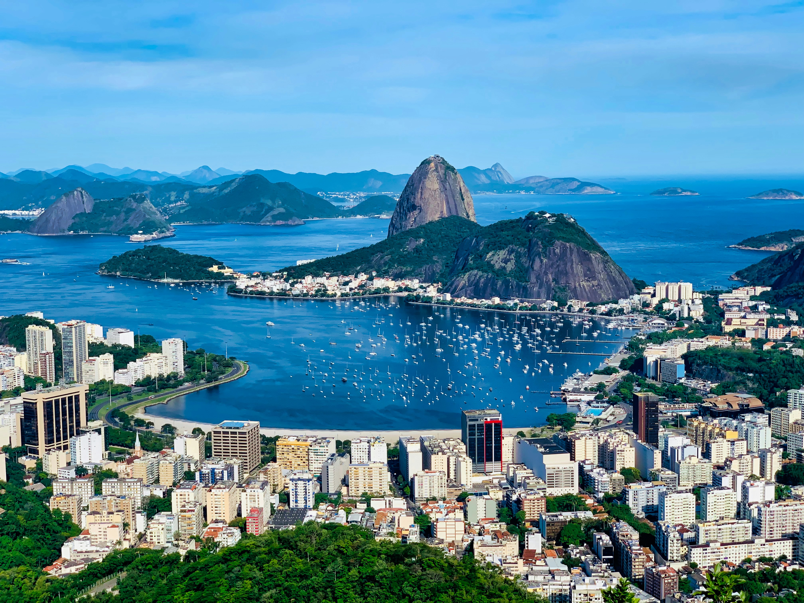
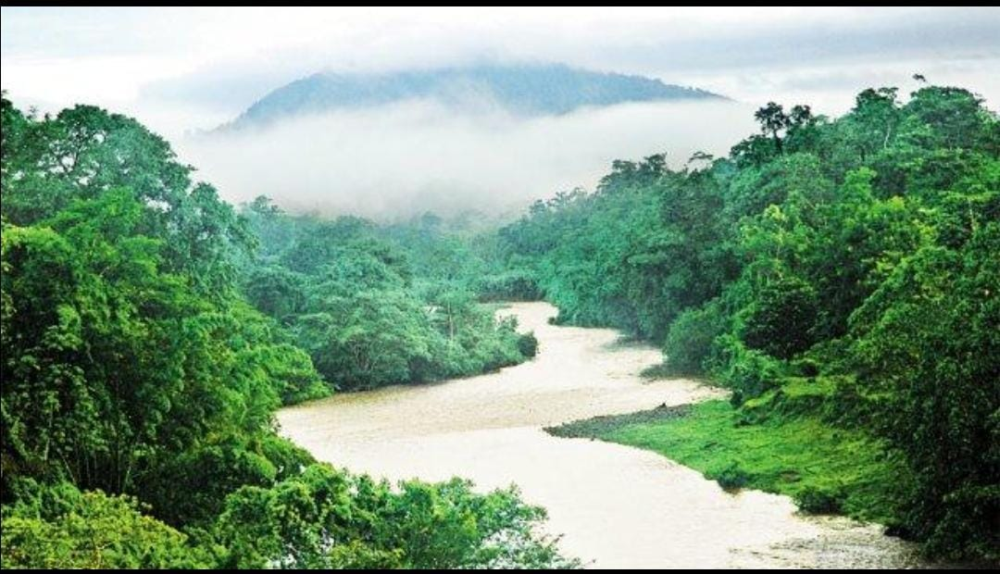
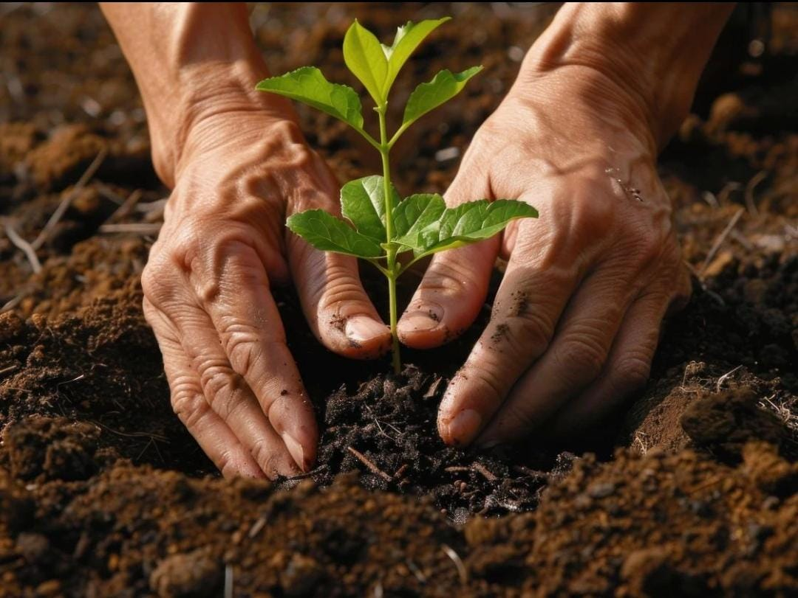

Cumbre de Río de 1992
Oficialmente, la Conferencia de las Naciones Unidas sobre el Medio Ambiente y el Desarrollo (CNUMAD), conocida como Cumbre de la Tierra.

Fecha
3 al 14 de junio de 1992.
Lugar
Río de Janeiro, Brasil.
Participantes
Delegaciones de más de 170 países, con jefes de Estado y de gobierno, y miles de representantes de ONG.
Importancia histórica
Consolidó el desarrollo sostenible (Informe Brundtland, 1987) como meta política global y fue la mayor conferencia ambiental de la ONU hasta entonces.
Principales resultados
- Declaración de Río (27 principios)
- Agenda 21 (plan de acción)
- Convenio sobre la Diversidad Biológica
- Convención Marco sobre el Cambio Climático
- Declaración de principios sobre los bosques (no vinculante)
Línea del tiempo
No los confundas: la Cumbre es el evento; la Declaración es un conjunto de principios; la Agenda 21 es un plan de acción. Ni la Declaración ni la Agenda 21 son jurídicamente vinculantes.
Declaración de Río
Veintisiete principios que orientan a los Estados hacia el desarrollo sostenible. Toca una tarjeta para leer su idea central.
Agenda 21
Programa de acción mundial, no vinculante, de 40 capítulos para el desarrollo sostenible en el siglo XXI. El capítulo 1 es el preámbulo; los demás se agrupan en cuatro secciones.
Problemas ambientales
Elige un problema para ver sus causas y posibles soluciones.
Aplicación en Nicaragua

Nicaragua es parte del Convenio sobre la Diversidad Biológica y de la Convención Marco sobre el Cambio Climático. Verifica cifras y normativa vigente en MARENA antes de exponer.
¿Qué podemos hacer?

Individuales
Comunitarias
Conclusión
Río 1992 no resolvió los problemas ambientales, pero estableció un lenguaje común: desarrollo y ambiente deben ir juntos, con responsabilidad compartida, participación de todos y atención a las generaciones futuras. Sus ideas inspiraron convenios posteriores y, en 2015, la Agenda 2030 con los Objetivos de Desarrollo Sostenible. El reto sigue siendo convertir los principios en acciones concretas.
Pon a prueba lo aprendido